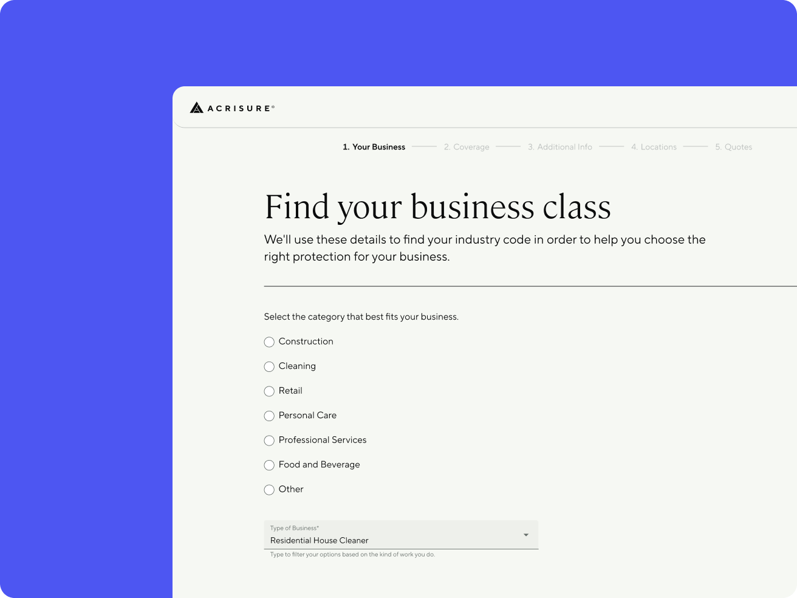
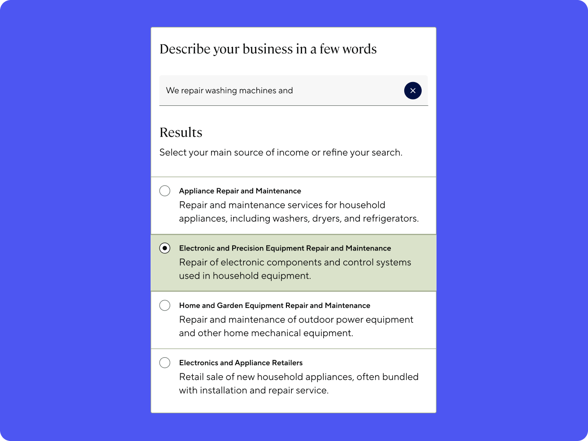
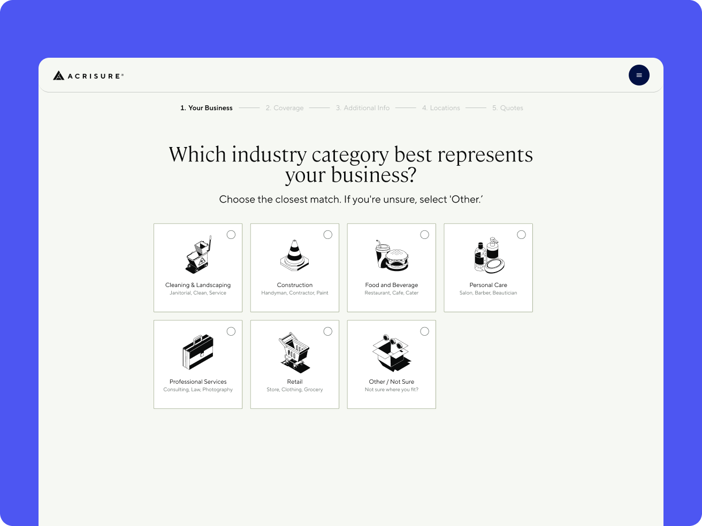
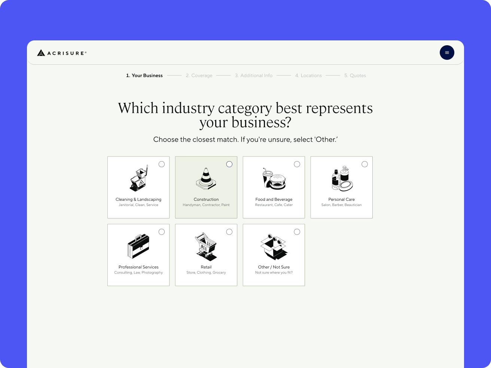
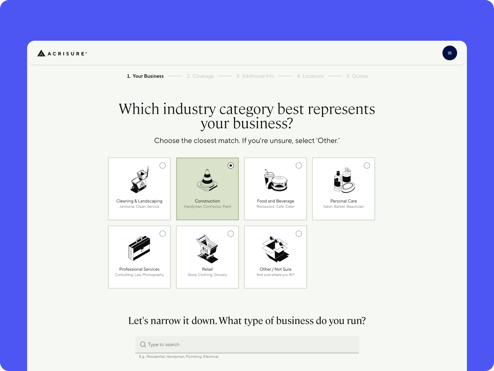
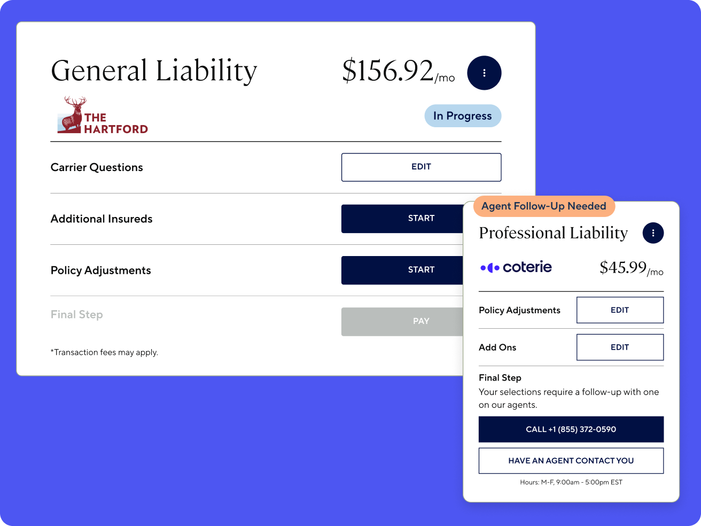

Rebuilding a Multi-Carrier Insurance Platform
Rebuilding quote-and-buy for six commercial insurance lines and thousands of industry codes, growing conversion over 30% YoY
The Situation
Small businesses use this platform to quote and bind insurance across six product lines. It has to support fully digital, hybrid, and agent-assisted journeys at once. More than half of the traffic is mobile web.
After an acquisition, the product had to move onto a new tech stack as a temporary fix. It shipped rough: industry codes, billing, and autofill weren't working reliably, and it struggled to support the digital, hybrid, and agent-assisted journeys the business needed. Over a few months I rebuilt the experience, alongside engineering rebuilding the backend, to work across dozens of carrier rulesets without pushing that complexity onto the customer.
The Constraint
Every product line depends on classifying a customer's industry correctly to determine eligibility and price, and there are thousands of possible codes with naming inconsistent enough to get strange (cleaning services alone split across half a dozen adjacent categories). Single-carrier competitors can offer a clean, curated list because they underwrite end to end.
A multi-carrier platform can't take that shortcut. Consolidating the raw data into something friendlier would have taken engineering investment that was never prioritized. Legal reviewed every screen from start to finish. Their changes were to copy, and the flow held up.
Industry Classification
Industry classification was the screen causing the most confusion after launch. High time-on-screen showed people struggling to find their category, made worse by the constraint above: thousands of inconsistent, carrier-specific codes with no bandwidth to simplify them.

Before: radio-button list
The obvious answer was AI. Let a customer describe their business in plain language and have a model return the closest matches. Engineering built the endpoint and my PM ran it against real business data. It was still returning wrong suggestions.

AI concept, tested internally, not shipped
We didn't ship it. Getting someone's industry wrong can lead to claim denials, back charges, higher premiums, and policy cancellation, and as the broker, we're the ones on the line. My team automatically weighs that risk on anything customer-facing.
What shipped instead was a visual card grid: broad categories represented with icons and plain-language examples, so a customer could recognize their business instead of parsing formal category names. Selecting a category scopes both the visible list and the search field below it, so a short, ambiguous term like "cleaning" doesn't return unrelated matches across the full 2,000-code set. Anyone unsure can pick "Other" and search the full set.



After: card grid, live today
This redesign produced a 3.7% increase in conversion on this step alone, with a corresponding drop in time-on-screen.
Sequencing Carrier Questions
Every carrier asks its own underwriting questions, and they arrive from engineering as raw API fields like residential units or percentage of sales from alcohol. The goal was getting customers to a quote fast, but every carrier needs different questions answered before it can price, and customers don't need to know which.
The ones that gate the quote became plain-language questions a business owner could answer, placed up front. Everything else waits until after the customer picks a carrier.
Those later questions live in a hub-and-spoke layout I designed, with a spoke for each coverage. Carriers bind at very different speeds (one confirms almost instantly, another needs an e-signature and can take days), so each spoke shows where its coverage stands. The flow supports digital, hybrid, and agent-assisted journeys, so customers can finish digitally where possible and bring their context with them if they need an agent.

Hub-and-spoke view with bind status per coverage
This is one of the best user experiences we have seen in the customer-facing realm.
The Hartford, Carrier PartnerShipped and Measured
After launch I watched where people dropped off in the funnel and changed what the data pointed to. The last step carried a message I had added, saying selections can't be edited once you move to payment. The data showed it made people hesitate. Nothing was hidden, since anyone who needed to change something could start over, so I removed it and 5% more users went on to payment.
Reflection
Designing for scale turned out to be a different problem than designing to prove an idea works.
I did it by recognizing an industry instead of parsing a code, answering only what the quote needed, and saving the rest until a carrier was chosen.